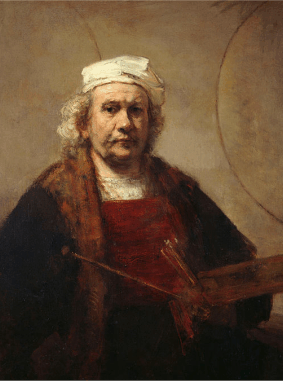

Rembrandt Harmenszoon van Rijn (15 July 1606 – 4 October 1669) was a Dutch painter and etcher. He is generally considered one of the greatest painters and printmakers in European art and the most important in Dutch history. His contributions to art came in a period of great wealth and cultural achievement that historians call the Dutch Golden Age when Dutch Golden Age painting, although in many ways antithetical to the Baroque style that dominated Europe, was extremely prolific and innovative, and gave rise to important new genres in painting.
Having achieved youthful success as a portrait painter, Rembrandt's later years were marked by personal tragedy and financial hardships. Yet his etchings and paintings were popular throughout his lifetime, his reputation as an artist remained high, and for twenty years he taught many important Dutch painters.Rembrandt's greatest creative triumphs are exemplified most notably in his portraits of his contemporaries, self-portraits and illustrations of scenes from the Bible. His self-portraits form a unique and intimate biography, in which the artist surveyed himself without vanity and with the utmost sincerity.
In his paintings and prints he exhibited knowledge of classical iconography, which he molded to fit the requirements of his own experience; thus, the depiction of a biblical scene was informed by Rembrandt's knowledge of the specific text, his assimilation of classical composition, and his observations of Amsterdam's Jewish population. Because of his empathy for the human condition, he has been called "one of the great prophets of civilization."
Rembrandt van Rijn

Born
Rembrant Harmenszoon van Rijn
15 July 1606
Leiden, Dutch Republic (now the Netherlands)
Died
4 October 1669(1669-10-04) (aged 91) Amsterdam, Dutch Republic (now the Netherlands)
Nationality
Dutch
Known for
Painting, Printmaking
Notable work
The anatomy Lesson of Dr. Nicolaes Tulp (1632) Belshazzar's Feast (1635) The Night Watch (1642)
Bathsheba at Her Bath (1654) Syndics of the Draper's Guild (1662)
If you have any concern for this site or anything related here, you can get in touch. You
can e-mail me on Yahoo or Gmail, or just message me personally on Facebook.
I grant with meet up but only nearby Pampanga. I'm whole day free every Tuesday and Sunday,
after lunch until 4:30 pm every Friday. I'm not available every Saturday because of my
religious matters; but if you want, you can join us here for International Thanksgiving to God at
ADD Convention, Apalit, Pampanga.